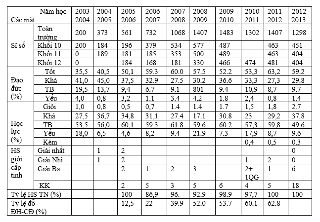

Bài viết "Trường THPT Vĩnh ĐỊnh 10 năm hình thành và phát triển" của thầy giáo Phạm Chí Tam trong tập san kỷ niệm 10 năm thành lập trường.
Ngày 12 tháng 9 năm 2003, Chủ tịch UBND Tỉnh Quảng Trị ký quyết định số 1936/2003 QĐ-UB thành lập trường THPT Vĩnh Định. Trường đóng tại xã Triệu Trung, bên dòng sông Vĩnh Định hiền hòa, trên vùng quê giàu truyền thống hiếu học. Trường ra đời đáp ứng nhu cầu và nguyện vọng học tập của các em học sinh và nhân dân các xã phía đông của huyện Triệu Phong và một số xã phía bắc huyện Hải Lăng. Cho đến nay đã được 10 năm, tuy mới chỉ là bước khởi đầu, nhưng 10 năm qua Trường THPT Vĩnh Định đã từng bước phát triển vững chắc trên tất cả các mặt: - Về số lượng: Năm học 2003-2004, trường đón nhận khóa học đầu tiên với 200 em học sinh lớp 10 và chia thành 4 lớp. Các năm học tiếp theo 2004-2005 và 2005-2006 do chưa có cơ sở chính thức, cơ sở vật chất thì còn nghèo, nên mỗi năm trường chỉ nhận vào 4 lớp 10 với số lượng 180 học sinh. Đến nay, năm học 2012-2013 trường đã có gần 1300 học sinh với 30 lớp (mỗi khối 10 lớp). - Về đội ngũ: Năm học đầu tiên trường có 14 CBGV biên chế, trong đó BGH 2, CB hành chính 1 và 11 GV đứng lớp, được tổ chức thành 3 tổ: Tổ Tự nhiên do thầy Đoàn Đăng Hải giáo viên Toán làm tổ trưởng; tổ Xã hội do thầy giáo Nguyễn Thanh Bình giáo viên Văn làm tổ trưởng và tổ Hành chính do thầy giáo Phạm Chí Tam PHT làm tổ trưởng. Sau 10 năm, trường đã có 80 CBGV đạt trình độ từ Đại học trở lên (trong đó 8 GV Cao học). BGH có 3 người, 69 giáo viên, 4 cán bộ hành chính, 5 nhân viên hợp đồng. Trường được biên chế 11 tổ (10 tổ chuyên môn và 1 tổ hành chính). Đội ngũ CBGV không ngừng học tập vươn lên về mọi mặt chuyên môn nghiệp vụ và lý luận chính trị. Hàng năm trường tổ chức hội thi GVDG cấp trường và dự thi GVDG cấp tỉnh. Hiện tại trường có 11 GV đạt GVDG cấp Tỉnh, trên 20 GV đạt GVDG cấp trường. - Về cơ sở vật chất: Ngày đầu mới thành lập, trường chưa có cơ sở chính thức phải mượn khu vực lẻ của trường tiểu học Triệu Tài để học tạm trong 3 năm. Được sự quan tâm của Tỉnh, Huyện và của Ngành, từ năm học 2006-2007 trường đã có một ngôi trường khang trang bề thế nhất trong toàn tỉnh, với tổng kinh phí xây dựng trên 13 tỷ đồng lúc bấy giờ. Trường gồm có 3 dãy nhà chính, có 15 phòng học, 2 phòng để bồi dưỡng học sinh giỏi, có 3 phòng thí nghiệm thực hành Lý -Hóa –Sinh đạt chuẩn, 2 phòng máy vi tính, 1 nhà tập ngoài trời. Thư viện nhà trường có diện tích trên 100m2 với trên 2000 SGK các loại, 3000 đầu sách tham khảo, 6 loại báo và 10 loại tạp chí. Thư viện hàng ngày thu hút được hàng trăm bạn đọc. Mặc dù không lớn nhưng trường cũng có một hội trường có thể tập trung được 300 học sinh, đáp ứng được các sinh hoạt ngoại khóa, sinh hoạt tập thể, giáo dục NGLL, HN….Trường có hệ thống vệ sinh khép kín, sạch sẽ tiện lợi. Phòng truyền thống và các phòng làm việc hành chính sạch đẹp và thoáng mát. Khu hiệu bộ được trang bị đầy đủ phương tiện làm việc như: Máy tính, máy quét, máy fax, máy photocopy, máy quay phim… Hệ thống sân bãi, đường đi lối lại được lát gạch và bê tông hóa sạch đẹp. Cây xanh bóng mát, cây cảnh trong khuôn viên được bố trí hợp lý đẹp mắt. -Về công tác dạy và học: Thực hiện lời dạy của Bác “Dù khó khăn đến đâu cũng phải thi đua dạy tốt - học tốt”, 10 năm qua thầy và trò nhà trường luôn duy trì phong trào thi đua “Hai tốt” để không ngừng nâng cao chất lượng giáo dục toàn diện. Nhà trường coi việc xây dựng kỷ cương nề nếp trường học là yếu tố quyết định để nâng cao chất lượng văn hóa. Nề nếp nhà trường được bắt đầu từ đội ngũ CBGV, tập thể sư phạm luôn đoàn kết gương mẫu, các tổ chức đoàn thể trong nhà trường luôn biết phối, kết hợp đồng bộ để chăm lo công tác giáo dục. Chất lượng giáo dục toàn diện của nhà trường từng bước phát triển vững chắc. Tỷ lệ học sinh tốt nghiệp 12 hàng năm dao động ở mức 97%; tỷ lệ học sinh thi đỗ vào các trường Đại học và Cao đẳng ngày càng cao. Chất lượng mũi nhọn từng bước nâng lên. Năm học 2011-2012 em Lê Văn Hóa đạt giải Nhất Tỉnh và giải Ba Quốc gia trong hội thi Khoa học sáng tạo trẻ Intel ISEF. Hàng năm nhà trường đều tổ chức thi học sinh giỏi cấp trường và tham dự thi học sinh giỏi cấp tỉnh đủ các lĩnh vực: Các môn văn hóa, Kỹ thuật, hùng biện tiếng Anh, IOE, TDTT… tất cả các lĩnh vực đều có giải.  Để có được thành tích trên tập thể BGH và đội ngũ CBGV đã đoàn kết, thống nhất, phát huy hết tinh thần trách nhiệm và lương tâm nghề nghiệp để chăm lo cho sự nghiệp giáo dục nói chung và của nhà trường nói riêng. Trong 10 năm qua trường luôn nhận được sự quan tâm lãnh đạo và chỉ đạo sâu sát của Huyện ủy, UBND và các ban ngành trong huyện Triệu Phong, của Lãnh đạo và các phòng ban của sở GD & ĐT Quảng Trị. Trước sự đổi thay của đất nước, sự lớn mạnh vượt bậc của nhà trường và nhu cầu đòi hỏi của học sinh và nhân dân, nhà trường xây dựng chiến lược phát triển 10 năm tiếp theo cho phù hợp với tình hình mới trên cơ sở phát huy nội lực, tranh thủ sự giúp đỡ cấp trên, kết hợp với các ngành, các cấp, đơn vị bạn để cùng phát triển, cụ thể là: Về cơ sở vật chất: Xây dựng nhà trường theo hướng “Chuẩn hóa” và “Hiện đại hóa”. Về đội ngũ: Ổn định đội ngũ, tiếp tục nâng cao trình độ chuyên môn nghiệp vụ cho CBGV. Đặc biệt chú trọng trình độ ngoại ngữ và tin học. Về chất lượng giáo dục: Tiếp tục xây dựng nề nếp kỷ cương trường học để làm đòn bẩy thúc đẩy chất lượng học tập. Đầu tư chất lượng mũi nhọn và nghiên cứu khoa học, nâng cao chất lượng các hoạt động ngoại khóa, ngoài giờ lên lớp, hướng nghiệp, giáo dục kỹ năng sống…Phấn đấu đến năm 2015-2016 trường đạt tiêu chí “Trường chuẩn quốc gia”.